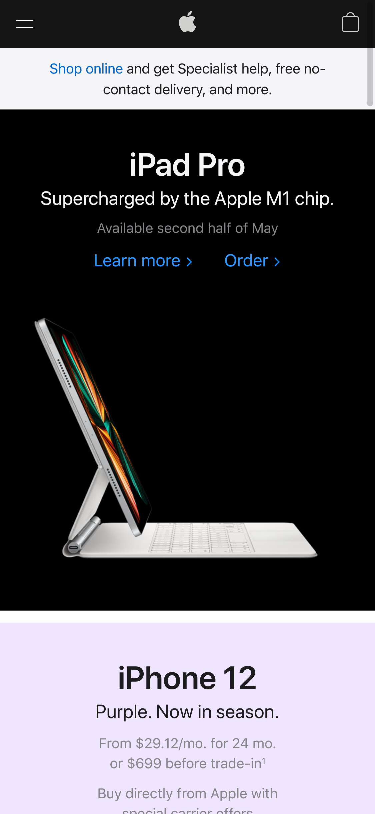
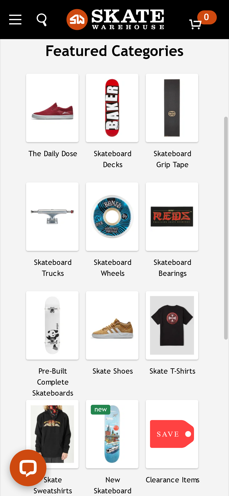

PARC: White Space
Black Diamond
blackdiamondequipmet.comThe space between elements on this page makes it clean and pleasant to look at. Even though the space has an image and isn't blank, I think the fact that the text is out of the way of the main subject of the image makes it look really well layed out.
PARC: Contrast
Apple
apple.com I was initially looking at apple for white space but the home page right now has some realy good contrast. The white text on black background obviously has good contrast but I really liked the contrast of the black card vs the purple card. It is very obviously a differnt section of the site and makes it easy to see where one section starts and the next ends.
PARC: Repetition
Skate Warehouse
skatewarehouse.com The simple repetition of the different categories makes it really easy to see a lot of information and interact with it. Each card is a simpe white box with an image that has the same format for each one. This all helps the customer find what they are looking for by quickly filtering down the options.